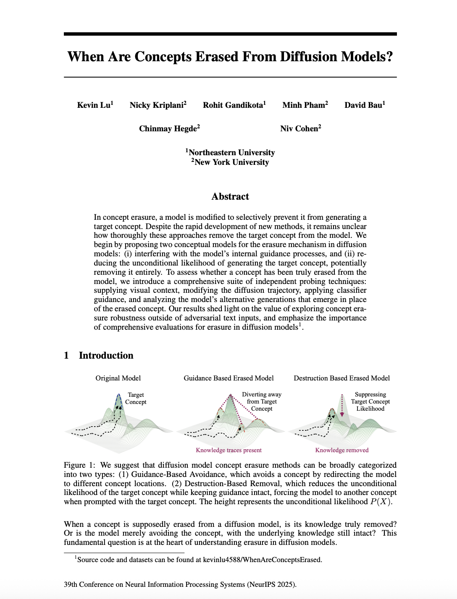

ArXiv
Preprint

Source Code
Github
When are concepts truly erased from diffusion models?
In concept erasure, a model is modified to selectively prevent it from generating a target concept. Despite the rapid development of new methods, it remains unclear how thoroughly these approaches remove the target concept from the model.
We begin by proposing two conceptual models for the erasure mechanism in diffusion models: (i) interfering with the model's internal guidance processes, and (ii) reducing the unconditional likelihood of generating the target concept, potentially removing it entirely.
To assess whether a concept has been truly erased from the model, we introduce a comprehensive suite of independent probing techniques: supplying visual context, modifying the diffusion trajectory, applying classifier guidance, and analyzing the model's alternative generations that emerge in place of the erased concept. Our results shed light on the value of exploring concept erasure robustness outside of adversarial text inputs, and emphasize the importance of comprehensive evaluations for erasure in diffusion models.
Our Comprehensive Evaluation Suite
To empirically investigate the extent to which models perform guidance-based avoidance versus destruction-based removal, we introduce a comprehensive evaluation framework that probes multiple pathways through which erased knowledge may resurface. Our suite includes four distinct probing techniques that extend beyond traditional adversarial text inputs:
1. Visual Context Probing
We investigate whether an erased concept can resurface when the model is provided with visual context. Unlike optimization-based approaches, these methods do not use the network's gradients, providing a different lens on erasure efficacy.
Inpainting Probe
We provide the model with an image of the erased concept but mask out a central portion, testing whether the model can complete the missing region despite erasure.

Diffusion Completion Probe
We run the diffusion process with the original model for a few timesteps (t=5 or t=10 out of 50), then pass the intermediate noisy image to the erased model to complete the generation process.

2. Noise-Based Trajectory Probing
We introduce a training-free method to probe for residual knowledge by directly manipulating the model's generation process. This technique searches for hidden knowledge traces by augmenting the diffusion trajectory with controlled Gaussian noise.

3. Classifier-Guided Latent Probing
To test whether erased models still encode latent traces of the target concept, we apply classifier guidance in latent space. A lightweight timestep-aware classifier, trained directly on diffusion latents, predicts the probability that the current latent encodes the erased concept. This classifier provides a gradient signal that steers the diffusion trajectory toward regions associated with that concept.
At each denoising step t, we compute the gradient of the binary cross-entropy loss with respect to the latent:
We then update the latent at each timestep using the classifier's guidance direction:

4. Dynamic Concept Tracing
We analyze how concept representations evolve during the erasure process by examining the trajectories of alternative generations at different erasure strengths. We prompt the model at various stages using the concept name and inspect the resulting images to understand how different methods degrade concepts.
How to cite
The paper can be cited as follows.
bibliography
Kevin Lu, Nicky Kriplani, Rohit Gandikota, Minh Pham, David Bau, Chinmay Hegde, Niv Cohen. "When Are Concepts Erased From Diffusion Models?" 39th Conference on Neural Information Processing Systems (NeurIPS 2025).
bibtex
@inproceedings{lu2025concepts,
title={When Are Concepts Erased From Diffusion Models?},
author={Kevin Lu and Nicky Kriplani and Rohit Gandikota and Minh Pham and David Bau and Chinmay Hegde and Niv Cohen},
booktitle={39th Conference on Neural Information Processing Systems (NeurIPS)},
year={2025}
}